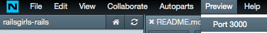
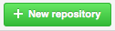

Use the right arrow to go to the next step.
In some sections, you'll have the option of reading more information. Use the down arrow to read this, and when you're finished, use the right arrow to move on to the next step.
If you get lost, hit the escape key (ESC) to see an overview of the course,
or ask a coach for help.
To build apps and other things with Ruby on Rails, you need to set up 2 accounts.
We need somewhere for you to write code and run a server, and we need somewhere for you to store and share your code so you can work with other people.
First, let's set you up with GitHub account.
Do you have one already?
GitHub is a way to store and share your code.
With Github, you can keep track of all the changes you make and collaborate with other people.
Tell GitHub your email address, pick a username and password, and sign up.
If you want to know more about Git and GitHub, keep reading.
GitHub is a service that helps you to store and track your code. It runs using a system called 'Git'.
Git manages your project, including all the files you make, as they change over time.
Git stores this information in something called a 'repository'.
A repository stores a copy of your project. It also records every change you make to your project. These changes are called 'commits'.
This means you can look at your commit history, to see what changes you've made to your project, and when you made them.
When you first create your project, you've got the only copy of it. This is bad, because if something happened to your computer, you might lose everything you've made.
Committing your project using Github (via Git) means you've got a backup copy just in case anything goes wrong.
The other great thing about this is that you can always go back to an old version of your project, so if you make a mistake, or change your mind about something you've done, you can easily fix it.
GitHub also allows you to collaborate on projects. If you and your friend wanted to build something together, you could work on your own computers, committing changes to GitHub as you made them.
GitHub lets you know if you've both tried to change the same thing, so you can pick which copy you want to use.
Once we've done some work on our project, we'll commit it to GitHub. However, if you want to try out some of the commands you'll be using, check out this tutorial.
Every craftsman needs a certain set of tools in his workshop.
Normally, developers install software on their computer and use Terminal and a text editor to write code. This is perfectly OK, but it takes a bit more time to set up.
We're not making you obtain the necessary tools and build your own workshop just for this demonstration. Instead, we'll let you use a fully working workshop, with all the necessary tools already available. This means we can start making magic straight away.
We're going to use a shortcut by coding in Nitrous.io.
Set up your Nitrous.io account by following this guide.
When you're ready, log in to your account and then come back here.
Open this page and click "connect GitHub". You'll be asked to authorise Nitrous.io to access your GitHub account.
Before we dive into creating a real application, let's play with the main building block of the web first – HTML.
Let your coach guide you through the very basics of HTML and CSS.
Write your first HTML document. Learn what's the purpose of HTML and what is CSS used for.
When you're ready, get back here to start with your app.
In Nitrous, open the dashboard, and start a new box
We're coding using Ruby on Rails, so pick the Ruby/Rails template.
Leave the GitHub repo box blank.
You're now ready to start making your app!
First, we're going to make somewhere to store our app.
In Nitrous, the boxes at the bottom of the page are your Terminal.
Your Terminal is used to write commands that control the server,
the files you're creating and your database.
We need to create some folders to store our app in.
In the terminal type:
mkdir projectsThe 'mkdir' command means 'make directory'. So, we've made a directory called 'projects'.
Now, we need to access the directory we made.
In the terminal type:
cd projectsThe 'cd' command means 'change directory'. We're now in the 'projects' directory.
The 'projects' directory is usually used to store all your different coding projects.
We're going to make an app called Rails Girls.
In the terminal type:
rails new railsgirls -m http://railsgirls.com/simple_scaffold.rbThe 'rails new' command creates a new rails app.
The -m http://railsgirls.com/simple_scaffold.rb part tells Rails to download a special template from railsgirls.com which makes the files a bit simpler and easier for beginners to understand.
Let's change directory into our new app.
In the terminal type:
cd railsgirlsTo check we've set up our app correctly, let's start the server.
In the terminal, type:
rails serverOur server will now start up. You'll notice that the terminal now looks a bit different. Instead of our directory name, it just shows this:
◽ While the server is running in this page of the terminal, we can't type any other commands in. We can open a second tab in the terminal by clicking the '+' button.
Let's check to make sure our server is running properly.
In the menu bar at the top of the Nitrous window, click 'preview', and choose 'Port 3000'.

A new tab will open in your browser.
This should say "Welcome Aboard".
Don't have this? Get a coach to help check it out.
Great. We now have a working server. Let's shut it down (for now) and start work.
Go back to the Nitrous.io tab.
Click the terminal, and hit Ctrl+C.
This will stop the server.
When we create websites, we store them on a server. When you go to view a website,
a bunch of different things happen to show you the page.
Know how websites work already?
When we're building our website, we're making the stuff on the server (step 3).
Our web app will also need to store data, so it will have a database.
Our web app needs to:
The information we send back to the browser has to be in a format the browser can read and display. This is normally HTML, as well as some CSS (to make our page look pretty, and Javascript (to make things like forms work).
Let's take a look at what's in the app we just set up.
In the terminal, type:
lsYou'll see a list of all the different things in your new app.
app bin config config.ru db Gemfile Gemfile.lock lib localhost:3000 log public Rakefile README.md README.rdoc test tmp vendor One of the great things about Rails is that it comes with some built-in things that make it super easy to get going. One of these is scaffolds. Scaffolds let you easily add new concepts (like users, posts and comments) in one command.
The scaffold command creates all the necessary code files you need to work with that concept. This includes database tables to store information in, and instructions for how it needs to interact with other parts of your app.
In the terminal, type:
rails generate scaffold idea name:string description:text picture:stringYou've now created a concept (model) called 'idea' that includes:
The 'string' and 'text' parts tell the app what type of data it will be.
There are lots of different types of data you might include, such as:
:binary - stores data such as images, audio files or movies.:boolean - stores true or false values (such as whether a particular user is an administrator of an application or not).:date - stores only a date (year, month, day).:datetime - stores both a date and a time.:integer - stores whole numbers.When we add new concepts like these to our app, we need to update our database. This is called a migration.
In the terminal, type:
rake db:migrateThere's also a command to reverse the migration if you make a mistake:
rake db:rollbackIf you've heard developers talking about a 'rollback', this is what they mean.
Let's restart our server and see what that made.
In the terminal, type:
rails serverOpen the preview on Port:3000 again.
The address in the browser will be yourappname.nitrousbox.com.
Add '/ideas' to the end of the URL.
You'll now be able to see the basics of the app you're creating!
If you can't see your app, ask a coach for help.
It looks pretty plain right now, but click around and explore what you've built.
Once you've had a play, go back to your Nitrous.io editor.
Stop the server by clicking in the terminal and typing Ctrl+C.
In a Ruby on Rails application, the user interface (what someone visiting the website will see), is often written in HTML with Embedded Ruby (ERB) code.
This code is contained in a specific directory called ‘views’, located in the app folder of your Rails application directory.
HTML (HyperText Markup Language) is the main language used to write the things displayed in a web browser. HTML includes content, and tags to structure the content.
These tags come in pairs (an open and a close tag).
For example, the main heading on your page will have <h1>tags</h1> around it.
HTML tags use angular brackets < >.
Your web browser uses the tags to understand how to display content.
ERB is a system supplied by Ruby that allows you to insert pure Ruby code into files written in other languages, such as Javascript or HTML. The Ruby code is contained within specific angle brackets <% and %> which instruct the system to execute the contents.
If an = sign accompanies the angle brackets <%= and %>,
then the contents are executed and rendered on the page.
For example, if you had 25 active ideas in your application, the code:
There are currently <%= Idea.count %> active ideaswould render as: There are currently 25 active ideas.
Earlier, we ran a scaffold command to set up our app.
As well as creating our model, it also created a controller, and a view.
When someone connects to your Rails website, the request the browser sends to the server hits the controller you've created. The controller communicates with the model (and the model with the database) to get the information needed. It then sends that information to the view, which returns the HTML to the requesting browser, so they can see your site.
All the things we've talked about so far involve the content of our website,
and the structure of that content.
The next piece of the puzzle is CSS (Cascading Style Sheets). CSS is used to format/style
our website, so that it looks beautiful and is nice to use.
In Nitrous.io, the left side of the page has a tree menu. Use this to open app/views/layouts/application.html.erb in your text editor.
This is a default layout file. You can use this to create default formatting for your app.
Find the line <%= stylesheet_link_tag "application", media: "all", "data-turbolinks-track" => true %>. Above this line, add this code:
The rel="stylesheet" tells us the type of link we've just added (called the link relation). The href= tells us the address of the file (this is called the hypertext reference). We're using a stylesheet called 'Bootstrap', made by Twitter. It's a free and easy way to style your app.
Replace <%= yield %> with:
<%= yield %>
The <div> tag is used to divide your code into parts.
You can also assign a class. This allows you to apply the same styling
to all the things with this class. We've called ours 'container'.
<%= yield %> is a way of adding the unique content we'll have on each page into the container. This helps make sure our styling is consistent.
We want to have a navigation bar at the top of our page, so that people using our app can find their way around. We also want to have a footer at the bottom of the page.
In the same file, under <body> add:
Make sure you scroll down to get all the code! This is the navigation bar.
Let's add the footer too. Before </body>, add:
Finally, we're going to make some changes to the way our ideas display. We want to space them out a bit. Open app/assets/stylesheets/application.css
and at the bottom, add:
body { padding-top: 100px; }
footer { margin-top: 100px; }
table, td, th { vertical-align: middle; border: none; }
th { border-bottom: 1px solid #DDD; }Make sure you save the file. There's a 'Save' button at the top of the text editor box.
So, what did that CSS do?
body - this part is known as the selector and refers to the HTML element you wish to style.
{ padding-top: 100px; } - this part is known as the declaration; each declaration has a property which is the style attribute you wish to change (padding-top),
and an associated value (100px).
Declarations always end with a semicolon and declaration groups
are always enclosed by curly brackets.
Let's start the server again, and check out our progress. In the terminal, type:
rails serverOpen the preview on Port:3000 again.
Don't forget to add '/ideas' to the end of the URL
When you're finished looking, stop the server again by hitting Ctrl+C.
In our app, we want to be able to upload images. At the moment, we can't do that.
Rails has lots of useful add ons you can use. In programming, these are usually called libraries, but in Rails, we call them gems. Gems contain pre-written code and help to reduce errors and duplication in your code.
In your project menu, you'll see something called Gemfile.
This has all the gems that came with the application we created.
Open gemfile so you can edit it in the text editor. Under the line gem 'sqlite3', add:
gem 'carrierwave'The sqlite3 gem interfaces with our database, and carrierwave
makes it easier to upload images.
In the terminal, run:
bundleThis runs Rails' Bundler software, which fetches the gems you have
added from the https://rubygems.org website, and installs them.
Now, we can generate the code for uploading pictures. In the terminal, type:
rails generate uploader PictureNow, we need to customise the form we use for editing and uploading ideas.
We're using the same bit of code to edit and upload. This is found in app/models/idea.rb.
This code snippet is used in both edit.html.erb and new.html.erb, as the two forms are basically identical. This saves us some work! If you look at either of those pages,
rather than form code, it just says <%= render 'form' %>.
Open app/models/idea.rb. Under the line class Idea < ActiveRecord::Base, add:
mount_uploader :picture, PictureUploaderOpen app/views/ideas/_form.html.erb. This file creates our form HTML.
At the top, you'll see form_for(@idea). This starts our form code for the idea form.
Find <%= f.text_field :picture %> and change it to:
<%= f.file_field :picture %>This changes the code from asking for a text input to asking for a file input, which makes it easier for our users to upload an image.
In the terminal, start the server again by typing:
rails serverRefresh the browser window you're viewing your app in to see the changes,
and add a new idea.
Did you get an error?
In app/views/ideas/_form.html.erb, change <%= form_for(@idea) do |f| %> to:
<%= form_for @idea, :html => {:multipart => true} do |f| %>You'll notice that the image didn't display; instead, it showed the path to the image.
Let's fix that.
Open app/views/ideas/show.html.erb and change <%= @idea.picture %> to:
<%= image_tag(@idea.picture_url, width: 600) if @idea.picture.present? %>Refresh your browser, and you should now see the image.
Want to know more about what that code change did?
Let's take a closer look at app/views/ideas/show.html.erb.
In the code <%= @idea.picture %>, @idea is what we call an 'instance variable'. Instance variables are start with an @ symbol. Each view file (what we're looking at now), has a corresponding controller action, where the instance variables' are set.
In our code, @idea is set in the ‘show’ action of the Ideas controller. It's set with the code @idea = Idea.find(params[:id]).
This allows us to use it in the view show.html.erb. It uses the Rails 'Find' method to get the ideas for our app from our database.
The code that follows the @idea variable (.picture) tells Rails to access the ‘picture’ attribute of our resource (idea).
Our new code, <%= image_tag(@idea.picture_url...), uses the Ruby image_tag helper. This gives us an HTML <img> tag, but retrieves the image we want to display from the folder 'public/images' where our uploaded images are stored.
We also set a default width for each image (width: 600).
The final part of that line of code, if @idea.picture.present? checks if there is an image available before executing the rest of the code in this file.
One part of our app's job is to listen to requests from the browser and return the correct information. In Rails, we have a system called 'routing' that does this.
The browser requests information using HTTP* methods. There are four main methods it uses:
*HTTP (Hypertext Transfer Protocol) defines how information is formatted and transmitted on the Internet.
Rails' routing system ensures the app knows what to do when it receives each of those methods for any of the resources in your app.
For example, GET /ideas/new will give you the form for adding a new idea.
POST /ideas will create a new idea.
We're going to change some of the routes we have set up. When you open the localhost:3000 page, it still has the Ruby 'Welcome Aboard' message.
We had to manually go to /index.
Open config/routes.rb. After the first line, add:
root to: redirect('/ideas')This changes the default page (root) that is returned when a browser requests your app to the /ideas page. Try it out now (don't forget to save your changes first, and
restart the server if you've stopped it).
Lastly, we're doing to add a static page to our app. This one is going to
provide information about the author of the app - you!
In the terminal, type:
rails generate controller pages infoThis created a new folder called 'pages', which you can find under app/views.
In that folder, you'll see a page called info.html.erb. Open it up.
You can customise the information in this page.
If you add /pages/info to your app URL now, you'll see this page.
Earlier, you created a GitHub account.
Now, we're going to add your new app to GitHub.
Open the GitHub website and log in.
Click the  button.
Give the repository a name, such as rails-girls.
You can also add a description.
Choose the 'Public Repository' option and make sure you tick the 'Initialize this repository with a README' box.
This creates a new repository (a place to store your app). It then initializes the repository, which allows you to record revisions of the project, and finally, it creates a read-me document. In most projects, this is where you'd write a brief description of the project, so that other people understand what you're building.
Go back to Nitrous.io. Make sure you're still in your project directory.
You can check this by looking at the terminal. It should show something like this:
action@railsgirls-rails-98616:~/projects/railsgirls(master*)$If you're not, use the cd command you learned earlier to change back into that directory.
In the terminal, type:
git initThis initializes your local git repository. Remember: git runs on your computer; GitHub stores your code online.
Let's add your code to your local repository. In the terminal, type:
git add .The . means all files. So, this command will get us ready to add all our files to our computer's repository.
Git has an intermediary stage before it saves any changes. This is called 'staging', and it allows you to make sure everything is correct, so you can commit (save) them.
You're now ready to make your first commit! In the terminal, type:
git commit -m "first commit"This commits all of your files to your computer's git repository. The words between the "" is your commit message. This tells other people looking at your code what you are doing.
Now, you need to send the code to GitHub, so you can share it and collaborate on it if you want. In the terminal type:
git remote add origin https://github.com/yourusername/yournewrepositoryname.gitThis makes a remote connection to the GitHub repository you've typed. We normally call this 'origin', as it's the original version.
Now the two repositories are connected, you need to push your computer's code to GitHub. In the terminal, type:
git push -u origin masterYour code is now on GitHub! On the GitHub website, open up the repository you created, and admire all your work there.
So, what next?
*If you'd like to do this one, you won't need to complete the 'brew install imagemagick' step. Nitrous comes with this already!